Contents
% Author: Iahn Cajigas % Date: 2/10/2014
Point Process Network Simulation
In order to understand how the point process GLM framework can be used to estimate the network connectivity within a population of neurons, we simulate a network of 2 neurons.
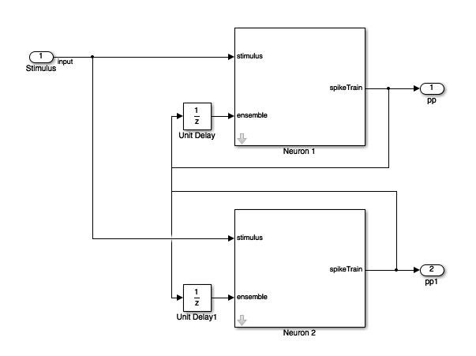

This block diagram specifies a conditional intensity function of the form
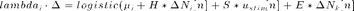
where, 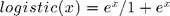. Note that * is the convolution opertator.
2 Neuron Network
clear all; close all; Ts=.001; %Sample Time tMin=0; tMax=50; %Simulation duration t=tMin:Ts:tMax; numNeurons=2;
Baseline firing rate of the neurons being modeled
mu{1}=-3;
mu{2}=-3;
History Effect
Captures how the firing of a neuron at modulates its probability of firing. Captures effects such as the refractory period and bursting. We use the same firing history for both neurons in this example. Note that the firing activity at time n leads to strong inhibition at time n+1 (refractory period) and that this effect becomes smaller over the next two time periods.
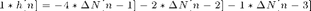
Note that the one sample delay in same cell firing is included in the simulink model.
H{1}=tf([-4 -2 -1],[1],Ts,'Variable','z^-1');
H{2}=tf([-4 -2 -1],[1],Ts,'Variable','z^-1');
Stimulus Effect
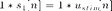
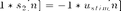
Neuron 1 is positively modulated by the stimulus
S{1}=tf([1],1,Ts,'Variable','z^-1');
% Neuron 1 is negatively modulated by the stimulus
S{2}=tf([-1],1,Ts,'Variable','z^-1');
Ensemble Effect
Captures the effect of how neighboring neuron firing modulates the firing of a given neuron.
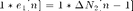
![$$1*e_{2}[n]=-4*\Delta N_{1}[n-1]$$](NetworkTutorial_eq83377.png)
Note that the one sample delay in firing of the neighbor cell is included in the simulink model.
%Neuron 2 firing positively modulates Neuron 1 E{1}=tf([1],1,Ts,'Variable','z^-1'); %Neuron 1 firing has strong inhibitory effect on neuron 2. E{2}=tf([-4],1,Ts,'Variable','z^-1');
Stimulus
We use a simple sine wave here but we may want to explore other types of inputs to see if they affect the recovery of the network parameters.
f=1; %Stimulus frequency [Hz] u = sin(2*pi*f*t)'; %Make this neuron modulated by a sine wave stim=Covariate(t',u,'Stimulus','time','s','Voltage',{'sin'}); % Map the variables to the Simulink model assignin('base','S1',S{1}); assignin('base','H1',H{1}); assignin('base','E1',E{1}); assignin('base','mu1',mu{1}); assignin('base','S2',S{2}); assignin('base','H2',H{2}); assignin('base','E2',E{2}); assignin('base','mu2',mu{2}); options = simget;
Simulate the Network
Uses a binomial model for the conditional intensity function nSTAT supports poisson model too but this simulink model simulates the firing using a binomial model
fitType = 'binomial'; if(strcmp(fitType,'binomial')) Algorithm = 'BNLRCG'; else Algorithm ='GLM'; end [tout,~,yout] = sim('SimulatedNetwork2',[stim.minTime stim.maxTime], ... options,stim.dataToStructure); clear nst; for i=1:numNeurons spikeTimes = tout(yout(:,i)>.5); %find the spike times nst{i} = nspikeTrain(spikeTimes); end sC=nstColl(nst); sC.setMinTime(stim.minTime); sC.setMaxTime(stim.maxTime); figure; subplot(2,1,1); sC.plot; v=axis; axis([0 tMax/10 v(3) v(4)]); subplot(2,1,2); stim.plot; v=axis; axis([0 tMax/10 v(3) v(4)]);
Warning: The model 'SimulatedNetwork2' has the 'Configuration Parameters' > 'Data Import/Export' > 'Signal logging format' parameter set to 'ModelDataLogs'. The signal logging save format 'ModelDataLogs' will be removed in a future release. To take advantage of new functionality, update models that use 'ModelDataLogs' signal logging format to use the 'Dataset' format. For help with resolving this and other upgrade issues, use the Simulink Upgrade Advisor.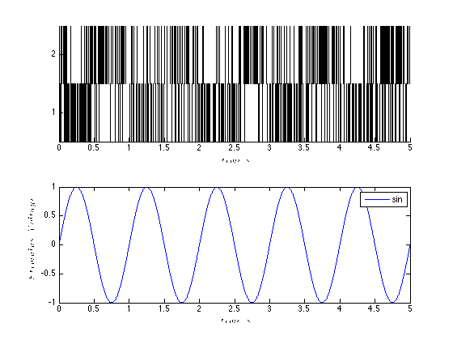
GLM Model Fitting Setup
In this section, we create the appropriate structures to fit several GLM models to the data generated above.
% Create a constant covariate representing the mean firing rate $$\mu_{i}$ baseline=Covariate(t',ones(length(t),1),'Baseline','time','s','',{'mu'}); spikeColl = sC; %Use the generated data as our collection of spikes %Use stimulation and baseline as possible covariates cc=CovColl({stim,baseline}); trial = Trial(spikeColl,cc); sampleRate = 1/Ts; %Create trial % trial.setTrialPartition([0 tMax/2 tMax]);
GLM Model Fitting and Results
clear c; % We know the history effect goes back 3 lag orders selfHist = [0:1:3]*Ts; % only have an effect at the 1ms lag. This captures the effect of the % firing of neuron 1 on neuron 2 and vice versa. ensHist = [0 1]*Ts; sampleRate = 1/Ts; %Lets compare three models of increasing complexity for each neuron % When results are shown, ]ambda_1 corresponds to the CIF obtained from the % c{1}, lambda_2 to c{2} etc. % Fit only a mean firing rate c{1} = TrialConfig({{'Baseline','mu'}},sampleRate,[],[]); c{1}.setName('Baseline'); % Fit a constant rate and ensemble model c{2} = TrialConfig({{'Baseline','mu'}},sampleRate,[],ensHist); c{2}.setName('Baseline+EnsHist'); % Fit the correct/exact model c{3} = TrialConfig({{'Baseline','mu'},{'Stimulus','sin'}},sampleRate,... selfHist,ensHist); c{3}.setName('Stim+Hist+EnsHist'); % Place all configurations together and run analysis for each neuron cfgColl= ConfigColl(c); results = Analysis.RunAnalysisForAllNeurons(trial,cfgColl,0,Algorithm); % Visualize the Results results{1}.plotResults; results{2}.plotResults; Summary = FitResSummary(results); % Summary.plotSummary; % Construct an image of the Actual vs. Estimated Network actNetwork = zeros(numNeurons,numNeurons); network1ms = zeros(numNeurons,numNeurons); for i=1:numNeurons index = 1:numNeurons; neighbors = setdiff(index,i); [num,den] = tfdata(E{i}); actNetwork(i,neighbors) = cell2mat(num); % Coefficients in the 2rd Analysis correspond to the estimated % connection weights. % See labels after running command: [coeffs,labels]=results{i}.getCoeffs; [coeffs,labels]=results{i}.getCoeffs; network1ms(i,neighbors)=coeffs(1:(length(neighbors)),3); end maxVal=max(max(abs(actNetwork))); minVal=-maxVal;%min(min(actNetwork)); CLIM = [minVal maxVal]; figure; colormap(jet); subplot(1,2,1); imagesc(actNetwork,CLIM); set(gca,'XTick',index,'YTick',index); title('Actual'); subplot(1,2,2); imagesc(network1ms,CLIM); set(gca,'XTick',index,'YTick',index); title('Estimated 1ms');
Analyzing Configuration #1: Neuron #1,2 Analyzing Configuration #2: Neuron #1,2 Analyzing Configuration #3: Neuron #1,2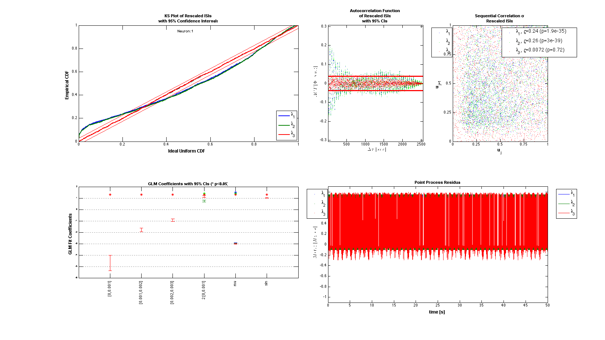
 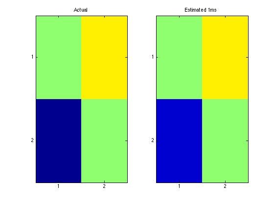
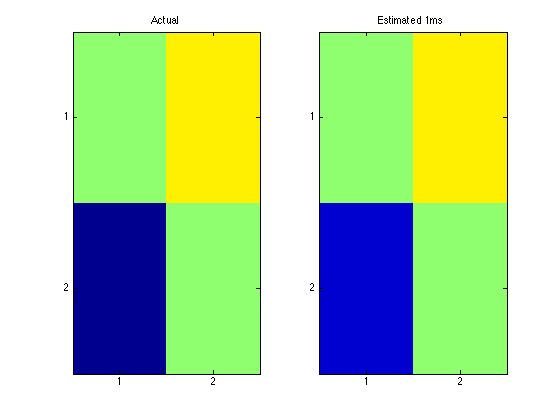 Note: by default all neurons are considered to be potential neighbors. If this is not the case, you can call trial.setNeighbors(neighborArray) where neighborArray is a matrix that in the ith row has ones in the columns of those neurons considered to be potential neighbors and zeros otherwise. By default neighborArray has 0 only on the diagonal, so that the ith neuron cannot be its own neighbor, and 1 ones elsewhere.